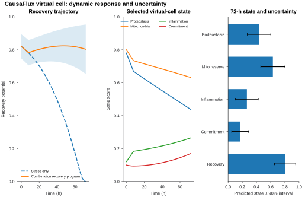
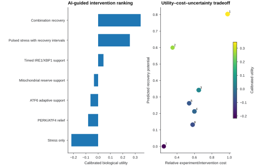
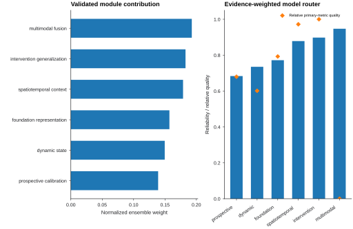
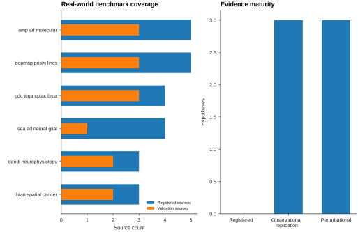
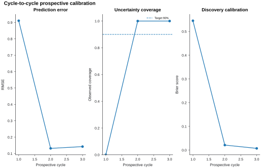
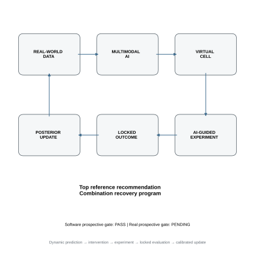

Software integrated virtual-cell gate
PASS
Real prospectively validated virtual-cell gate
PENDING
Top AI-guided reference intervention
Combination recovery program
calibrated utility 0.345
Real-world benchmark families
6
24 registered sources
Evidence boundary. The bundled v1.9 reference demonstrates a prospectively locked software workflow and integrates real observational evidence. It is not yet a biologically prospectively validated virtual cell. That label remains locked until real perturbational evidence and three real prospective cycles—including independent Cycle 3 confirmation/falsification—pass.
Virtual cell


| rank | scenario_label | calibrated_utility | utility_per_cost | final_recovery_potential | mean_predictive_uncertainty |
|---|---|---|---|---|---|
| 1 | Combination recovery program | 0.345 | 0.352 | 0.803 | 0.093 |
| 2 | Pulsed stress with recovery intervals | 0.257 | 0.735 | 0.599 | 0.063 |
| 3 | Timed IRE1/XBP1 support | 0.043 | 0.067 | 0.342 | 0.093 |
| 4 | Mitochondrial reserve support | -0.034 | -0.056 | 0.212 | 0.089 |
| 5 | ATF6 adaptive support | -0.062 | -0.115 | 0.262 | 0.083 |
| 6 | PERK/ATF4 relief | -0.081 | -0.140 | 0.132 | 0.085 |
| 7 | Stress only | -0.217 | -0.867 | 0.000 | 0.070 |
AI model router
CausaFlux v1.9 combines validated modules using reliability weights derived from locked module-level benchmarks. The model router is explicit and auditable.

| module | selected_model | primary_metric | primary_value | reliability | normalized_weight | evidence_class |
|---|---|---|---|---|---|---|
| dynamic_state | IrregularTimeTransformer | trajectory_rmse | 0.464 | 0.735 | 0.150 | synthetic_prospective_proxy |
| multimodal_fusion | CausaFluxMoEDynamic | test_auc | 0.991 | 0.947 | 0.193 | synthetic_multimodal |
| intervention_generalization | CausaFluxInterventionGeneralizer | overall_rmse | 0.114 | 0.898 | 0.183 | synthetic_intervention_holdout |
| spatiotemporal_context | CausaFluxSpatiotemporalGNN | mean_state_rmse | 0.138 | 0.879 | 0.179 | synthetic_tissue_holdout |
| foundation_representation | CausaFluxFoundation | holdout_future_rmse | 0.296 | 0.772 | 0.157 | synthetic_pretraining_transfer |
| prospective_calibration | LockedCycleCalibrator | mean_prediction_rmse | 0.395 | 0.684 | 0.139 | synthetic_locked_three_cycle |
Real-world data and evidence

Bundled large or controlled datasets are not redistributed. The hub preserves accession, access, licensing, provenance and evidence class, and can register user-provided real datasets by content hash.
Prospective validation

| module_or_gate | status | evidence | requirement_class |
|---|---|---|---|
| dynamic_state | PASS | synthetic held-out perturbation histories | required |
| multimodal_state | PASS | synthetic multimodal longitudinal fixture | required |
| intervention_generalization | PASS | synthetic unseen intervention axes | required |
| spatiotemporal_context | PASS | synthetic held-out donors/sections | required |
| foundation_transfer | PASS | synthetic donor/tissue/perturbation holdouts | required |
| prospective_loop | PASS | three prospectively locked synthetic cycles | required |
| cycle3_independence | PASS | independent confirmation/falsification role | required |
| real_world_registry | PASS | accession-pinned real-world registry | required |
| real_world_observational_replication | PASS | real source-cohort replication | required |
| real_perturbational_validation | PENDING | real perturbational validation | real_claim |
| real_three_cycle_prospective_validation | PENDING | real Cycle 1→2→3 locked evidence | real_claim |
Publication outputs

All primary v1.9 figures export as 600-dpi PNG/TIFF plus vector SVG/PDF with panel source-data CSVs and SHA-256 figure manifests.